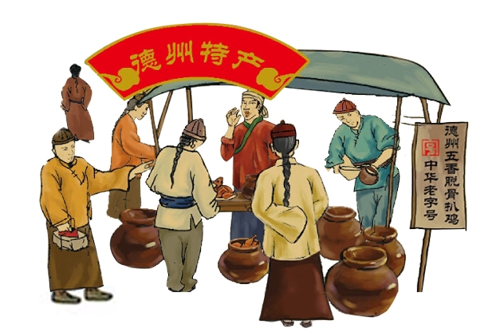

首页
关于我们
百年传承
品牌打造
产品中心
联系我们
永承八扒工艺 盛世誉满德州
德州"永盛斋"扒鸡集团
返回首页
扒鸡简介
品牌故事
独特美味
德州五香脱骨扒鸡 —————————— “天下第一鸡”
扒
鸡是山东省的代表菜之一,也是中华传统风味特色名吃，鲁菜经典，以德州五香脱骨扒鸡最富盛名，属中国四大名鸡之首。扒鸡源于明朝，创于清朝传于民国，盛于当今，已有300余年的历史。以制作独特、肉烂脱骨、色鲜味美、肥而不腻等特点著称，被誉为“天下第一鸡”。其制作技艺为国家非物质文化遗产。1919年载入《山东各县乡土调查录》。
感谢时光的沉淀，成就今日的金典
一段美食传奇故事从这里开始
意外之喜
01
02
品鸡取名
销路打开
03
04
“神州一奇”
天下第一鸡
05
06
“八扒工艺”
永承八扒工艺，盛誉载满德州

刘氏后人传承八大绝技，悉心经营。传至1662年（康熙元年），刘氏传人凭借“永承八扒工艺，盛世誉满德州”的祖训，在运河畔创立“永盛斋”扒鸡字号。自此，“永盛斋”坚守祖传八扒工艺，以小坛烹制正宗德州扒鸡，荣膺“中华老字号”，八大绝技传今朝！
立即参加
返回顶部
德州永盛斋扒鸡有限公司